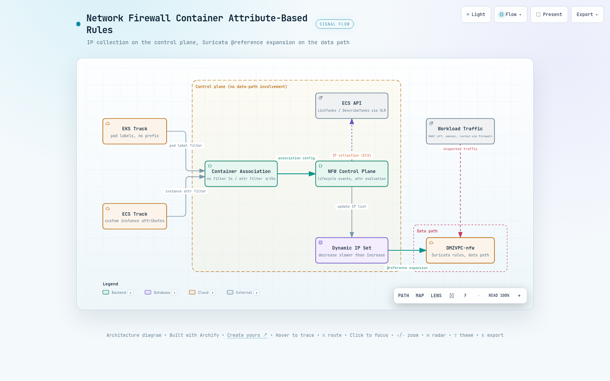

01기능 소개
Container attribute-based rules는 2026-06-30에 출시된 Network Firewall 기능으로, EKS/ECS 클러스터의 컨테이너 라이프사이클 이벤트를 구독해 속성에 매칭되는 컨테이너 IP를 동적 IP set으로 유지합니다. 운영자는 IP를 직접 나열하지 않고 "이 label을 가진 pod" 또는 "이 속성을 가진 container instance 위의 task"라는 조건만 선언하며, Suricata 룰은 그 집합을 별칭으로 참조합니다.
중심 리소스는 container-association입니다. 하나의 association은 타입(ECS 또는 EKS, 생성 후 변경 불가)과 최대 5개의 monitoring configuration을 가지며, 각 configuration은 클러스터 ARN 하나와 선택적인 속성 필터 목록으로 구성됩니다. 클러스터는 association과 같은 리전, 같은 계정이어야 하므로 크로스 계정 구성은 지원되지 않습니다.
1.1 API 5종
기존 Network Firewall API에 다섯 개 오퍼레이션이 추가되었습니다. 태깅 관련 오퍼레이션도 이 리소스 타입을 지원합니다.
| 오퍼레이션 | 역할 | 주의할 점 |
|---|---|---|
| CreateContainerAssociation | association 생성 | 이름은 ^[a-zA-Z0-9-]+$, 타입과 이름은 생성 후 변경 불가 |
| DescribeContainerAssociation | 상태 조회 | 응답의 ResolvedCidrCount가 IP 수집 여부를 보는 유일한 지표 |
| UpdateContainerAssociation | 모니터링 대상 변경 | UpdateToken 필수, 불일치 시 InvalidTokenException |
| DeleteContainerAssociation | 삭제 | 비동기로 DELETING 반환, 룰 그룹이 참조 중이면 실패 |
| ListContainerAssociations | 목록 조회 | 이름과 ARN만 반환하므로 상태는 Describe로 다시 조회 |
1.2 룰 그룹에서 참조하는 방법
stateful 룰 그룹의 ReferenceSets.IPSetReferences에 변수 이름과 association ARN을 매핑하면, Suricata 룰 문자열에서 @변수명으로 그 집합을 가리킬 수 있습니다. 이 검증에서 만든 ECS 룰 그룹은 필터형 association과 필터 없는 association 두 개를 동시에 참조합니다.
{
"RulesSource": { "RulesString": "
reject tls @abi_ec2_tasks any -> any any (msg:\"abi ecs-ec2 block amazon.com\";
flow:to_server; tls.sni; dotprefix; content:\".amazon.com\"; endswith; nocase; sid:3001; rev:1;)
alert tls @abi_all_tasks any -> any any (msg:\"abi ecs-all allow checkip\";
... content:\".checkip.amazonaws.com\"; sid:3101; rev:1;)
reject tls @abi_all_tasks any -> any any (msg:\"abi ecs-all block wikipedia\";
... content:\".wikipedia.org\"; sid:3102; rev:1;)" },
"ReferenceSets": { "IPSetReferences": {
"abi_ec2_tasks": { "ReferenceArn": "arn:aws:network-firewall:ap-northeast-2:...:container-association/abi-ecs-ec2" },
"abi_all_tasks": { "ReferenceArn": "arn:aws:network-firewall:ap-northeast-2:...:container-association/abi-ecs-all" }
} }
} // ConsumedCapacity 3 / 1001.3 쿼터와 제약
쿼터는 대부분 고정값입니다. 특히 룰 그룹당 참조 30개는 기존 IP set reference의 5개 제한과 별개로 적용되므로, association을 세분화해서 운영하는 설계가 쿼터 때문에 막히는 경우는 드뭅니다.
| 항목 | 값 | 조정 |
|---|---|---|
| 계정, 리전당 association | 100개 | 가능 |
| association당 monitoring configuration | 5개 | 불가 |
| 룰 그룹당 container association 참조 | 30개 | 불가 |
| ResolvedCidrCount 상한 | 1,000,000개 | 불가 |
| EKS 필터 키 | namespace, pod, cluster, 커스텀 label 키 | SNAT 비활성화 전제 |
| ECS 필터 키 | container instance 속성, EC2 launch type 전용 | awsvpc 모드 전용 |
| IaC 지원 | CloudFormation 미지원, Terraform은 병합 완료 | CLI/SDK 필요 |
Developer Guide는 "Network Firewall은 라이프사이클 이벤트에서 IP 정보만 수집하며 클러스터의 데이터 패스와 상호작용하지 않는다"고 명시합니다. 클러스터 안에 에이전트나 컨트롤러를 설치하지 않고, 검사는 기존 방화벽 엔드포인트가 그대로 수행합니다. 추가 요금도 없습니다. 즉 이 기능이 바꾸는 것은 규칙이 대상을 지목하는 방식뿐이며, 트래픽이 방화벽을 지나가도록 만드는 책임은 여전히 라우팅 설계에 있습니다.
02내부 동작 원리
같은 API, 같은 리소스 타입인데 EKS와 ECS의 내부 구현은 대칭이 아닙니다. 이 검증에서 CloudTrail, EventBridge, EKS access entry, 서비스 연결 역할 정책을 교차 조회한 결과 ECS는 고객 계정에 관측 가능한 자원과 호출을 남기고, EKS는 거의 아무것도 남기지 않습니다. 이 차이는 뒤에서 다루는 전파 지연 차이와 그대로 이어집니다.
2.1 EKS 경로는 Kubernetes 인증을 거치지 않습니다
EKS 쪽에서 확인한 것은 세 가지 부재입니다. 첫째, 클러스터의 access entry 7건 가운데 방화벽 관련 항목은 0건입니다. container association을 갖지 않은 대조군 클러스터의 access entry 5건에도 없으므로, 지워진 것이 아니라 애초에 만들어지지 않습니다. 둘째, 서비스 연결 역할 정책에 eks:* 권한이 하나도 없습니다. 셋째, eks:DescribeCluster 호출은 association 생성 1초 전에 딱 한 번 나타나고 이후 반복되지 않습니다.
그 한 번의 호출에는 특이한 점이 있습니다. sourceIPAddress와 userAgent는 network-firewall.amazonaws.com인데 호출 주체는 association을 만든 사용자 본인의 세션입니다. 즉 이 단계는 서비스가 자기 권한으로 클러스터를 읽는 것이 아니라, 호출자가 그 클러스터를 볼 권한이 있는지 호출자 자격증명으로 확인하는 검증입니다. 서비스 연결 역할 정책에 eks:*가 없다는 사실과 정확히 맞습니다.
Developer Guide는 EKS 타입 association이 "Amazon EKS Pulse Event Service"를 통해 pod 라이프사이클 이벤트를 구독한다고 적습니다. 이 이름은 다른 공개 문서 어디에도 설명이 없습니다. 이번 검증으로 access entry 경로가 아니라는 점은 위 세 가지 부재로 확정했지만, 실제 채널이 무엇인지는 고객에게 보이는 API 표면 밖에 있어 읽기 전용 조회로는 규명할 수 없었습니다. 이는 추론이 아니라 관측 한계입니다.
2.2 ECS 경로는 계정 안에 규칙을 만들고 주기적으로 폴링합니다
ECS 타입 association을 만들면 Network Firewall이 사용자 계정에 EventBridge 규칙을 자동으로 프로비저닝합니다. 이번 검증에서 우리가 만들지 않은 규칙 한 건이 생성되었고, 대상 클러스터로 스코프가 좁혀져 있어 클러스터 단위로 규칙이 만들어지는 구조임을 알 수 있습니다. 타깃은 Lambda나 SQS 같은 사용자 리소스가 아니라 계정 ID도 리소스 경로도 없는 서비스 소유 ARN입니다.
Name : NetworkFirewallManagedRule-abi-ecs-f95002052a4bc1e8
Description : This rule is used to route ECS Task Events to AWS Network Firewall
ManagedBy : network-firewall.amazonaws.com
State : ENABLED
EventPattern: {"source":["aws.ecs"],"detail-type":["ECS Task State Change"],
"detail":{"clusterArn":["arn:aws:ecs:ap-northeast-2:********6239:cluster/abi-ecs"]}}
Target : NetworkFirewallTarget -> arn:aws:network-firewall:ap-northeast-2:::
# 계정 ID와 리소스 경로가 없는 서비스 소유 ARN이벤트를 받은 뒤의 처리도 CloudTrail에 그대로 남습니다. 서비스 연결 역할이 스스로 assume한 세션으로 세 종류의 ECS 읽기 API를 순서대로 호출하며, association 생성 직후와 약 9분 뒤 두 차례 웨이브가 관측되었습니다. 이 검증에서 가장 결정적인 증거는 첫 번째 호출의 필터 문자열입니다. 우리가 속성 필터에 넣은 커스텀 키가 ECS의 서버측 attribute 필터 문법으로 그대로 번역되어 전달됩니다.
08:15:21Z ecs:ListContainerInstances cluster=abi-ecs filter="attribute:abi-env == lab"
08:15:21Z ecs:ListTasks cluster=abi-ecs containerInstance=d0bc521b... desiredStatus=RUNNING
08:15:22Z ecs:DescribeTasks cluster=abi-ecs tasks=[task/abi-ecs/ad040da6...]
08:15:25Z ecs:ListTasks cluster=abi-ecs desiredStatus=RUNNING # 필터 없는 association 용
08:15:25Z ecs:DescribeTasks cluster=abi-ecs tasks=[task/abi-ecs/3fa22e0b..., task/abi-ecs/ad040da6...]
08:24:01Z # 약 9분 뒤 동일 순서로 두 번째 웨이브다만 이 웨이브 간격을 고정 폴링 주기로 읽는 것은 이릅니다. 관측 윈도우(생성 -2분에서 +15분) 안에서 간격은 8분 38초였지만 재발이 한 번뿐이어서 주기가 고정인지 확인할 수 없습니다. 실제 반영 속도를 결정하는 것도 폴링이 아니라 이벤트 경로입니다. 무필터 association의 반영이 1초로 나온 것이 그 증거이고, 폴링은 이벤트를 놓쳤을 때를 보정하는 안전망으로 해석하는 편이 관측과 부합합니다.
2.3 EKS 트랙은 고객 계정 밖의 내부 채널로 동작합니다
ECS 트랙과 달리 EKS 트랙은 고객 계정에 아무 리소스도 만들지 않습니다. 생성 1초 전에 호출자 세션으로 서비스 프린시펄 표시가 붙은 DescribeCluster 한 번이 기록될 뿐이고, 이후 CloudTrail에는 어떤 지속 조회도 나타나지 않습니다.
Kubernetes 표준 인증 경로도 쓰지 않습니다. 방화벽 관련 access entry는 0건이고, 서비스 연결 역할에는 eks:* 권한이 전혀 없습니다. 결국 pod 라이프사이클 이벤트는 문서가 언급하는 EKS Pulse Event Service 내부 구독으로 서비스 쪽에서 직접 받고, IP 수집은 고객 계정에서 보이지 않는 내부 채널에서 일어나는 구조입니다.
고객 계정 어디에도 주기적 폴링의 흔적이 없으므로, EKS 트랙은 폴링이 아니라 이벤트 구독 방식으로 보는 것이 관측과 부합합니다. 폴링 주기라는 개념 자체가 EKS 쪽에는 성립하지 않습니다.
namespace 필터를 쓴 7월 association(트레일 S3 로그로 확인)과 커스텀 label 필터를 쓴 8월 association 모두 같은 패턴이었습니다. 조회 방법의 함정은 5장에서 다룹니다.
| 축 | EKS | ECS |
|---|---|---|
| 이벤트 수신 경로 | 고객 계정에 리소스를 만들지 않음, 문서상 EKS Pulse Event Service 내부 구독 | 고객 계정에 EventBridge Managed Rule 생성, 타깃은 서비스 소유 ARN |
| 생성 시 클러스터 검증 | eks:DescribeCluster, 호출자 세션으로 1회 | ecs:DescribeClusters, 호출자 세션으로 1회 |
| 이후 지속 조회 | 없음, CloudTrail에 나타나지 않음 | 서비스 연결 역할 권한으로 주기적 폴링, 관측 간격 약 9분 |
| Kubernetes 인증 경로 | access entry 미사용, 방화벽 관련 항목 0건 / 7건 | 해당 없음 |
| 서비스 연결 역할 권한 | eks:* 전혀 없음 | ECS 읽기 4종, 정책 v4에서 추가 |
| 관측된 반영 지연 | 6초에서 40초 | 필터 없음 1초, 필터형 39초에서 45초 |
원칙: ECS 트랙은 고객 계정에서 감사할 수 있고 EKS 트랙은 그럴 수 없습니다. EKS 쪽 동작을 검증해야 한다면 CloudTrail이 아니라 ResolvedCidrCount와 실제 트래픽 결과로 확인해야 합니다.
03테스트 설계
설계 원칙은 두 가지였습니다. 첫째, 이미 검증에 쓰이던 방화벽과 EKS 클러스터는 읽기만 하고 수정하지 않습니다. 기존 룰 그룹과 association을 그대로 남겨 베이스라인 비교군으로 쓰고, 방화벽 정책에는 신규 룰 그룹 참조를 추가만 합니다. 둘째, 신규 리소스는 모두 abi- Prefix를 붙여 정리 대상을 이름만으로 식별할 수 있게 합니다.
핵심은 음성 대조군입니다. "속성이 매칭된 컨테이너가 차단된다"만 확인하면 규칙이 실제로 선택적인지 알 수 없습니다. 같은 클러스터, 같은 서브넷, 같은 이미지에서 속성만 없는 워크로드를 나란히 두고 그것이 통과하는지까지 봐야 필터가 동작한다고 말할 수 있습니다. 그래서 트랙마다 대조군을 하나씩 배치했습니다.
3.1 두 도메인 판정 체계
판정은 도메인 두 개로 단순화했습니다. .checkip.amazonaws.com은 alert로 두어 허용되면서 로그 증적을 남기고, 차단 대상 도메인은 reject로 두어 TLS 핸드셰이크 단계에서 끊습니다. 클라이언트에서 보이는 결과는 허용이면 HTTP 상태 코드, 차단이면 연결 실패이므로 컨테이너 안의 curl 결과만으로 1차 판정이 가능합니다.
ECS 룰 그룹은 두 참조의 의미론을 구분하도록 세 규칙으로 구성했습니다. 필터형 참조로 차단하는 도메인, 필터 없는 참조로 허용하는 도메인, 필터 없는 참조로 차단하는 도메인을 각각 하나씩 두면 EC2 task와 Fargate task의 결과 조합만으로 어느 association이 어느 IP를 수집했는지 역산할 수 있습니다.
| 대상 | checkip | amazon.com | wikipedia.org |
|---|---|---|---|
| EKS abi-curl (label 보유) | 허용 | 차단 | 해당 없음 |
| EKS abi-free (대조군) | 허용 | 허용 | 해당 없음 |
| ECS EC2 task (속성 보유) | 허용 | 차단 | 차단 |
| ECS Fargate task (대조군) | 허용 | 허용 | 차단 |
판정 근거는 세 층으로 교차 확인했습니다. 클라이언트의 응답 코드, association의 ResolvedCidrCount, 그리고 방화벽 alert 로그입니다. 한 층만 보면 오판할 수 있습니다. 예를 들어 IP set이 아직 갱신되지 않아 통과한 것과 필터 밖이어서 통과한 것은 클라이언트에서 똑같이 보이므로, 반드시 카운트와 로그를 함께 봐야 합니다.
EKS에서 VPC CNI의 SNAT가 켜져 있으면 pod IP가 노드 IP로 바뀌어 방화벽에 도착하므로 규칙이 매칭되지 않습니다. 차단 규칙이 통과되는 형태로 나타나기 때문에 설정 오류가 아니라 기능 미동작으로 오인하기 쉽습니다. 이 검증 환경은 AWS_VPC_K8S_CNI_EXTERNALSNAT=true로 pod IP가 보존됨을 먼저 확인했습니다.
라우팅 순서도 같습니다. 서브넷 트래픽이 NAT Gateway를 먼저 지나면 방화벽은 NAT IP만 보게 되어 컨테이너 IP 기반 참조가 전부 빗나갑니다. 이 환경은 프라이빗 서브넷의 기본 경로가 방화벽 엔드포인트를 먼저 지나고 그 다음 NAT로 나가는 순서임을 라우트 테이블에서 확인한 뒤 시작했습니다.
04실측 결과
결과는 네 갈래입니다. 허용/차단 매트릭스, 초기 해석 시간, 동적 추적 지연, 로그 메타데이터입니다. 이 장의 모든 수치는 results/에 저장된 JSON 다섯 개에서 그대로 인용했습니다.
4.1 허용/차단 매트릭스 12건 전부 PASS
12개 케이스를 두 번 실행해 24건 모두 기대값과 일치했습니다. 주목할 것은 PASS 개수가 아니라 음성 대조군 3건입니다. label이 없는 pod, 커스텀 속성 필터 밖의 Fargate task, 그리고 같은 Fargate task가 필터 없는 참조에는 걸리는 케이스가 모두 설계한 대로 나왔습니다.
| case | 대상 | 기대 | 실측 | 판정 |
|---|---|---|---|---|
| T1-checkip-allow | EKS 베이스라인 | ALLOWED | ALLOWED | PASS |
| T1-amazon-block | EKS 베이스라인 | BLOCKED | BLOCKED | PASS |
| T2-restricted-checkip-allow | EKS label 보유 | ALLOWED | ALLOWED | PASS |
| T2-restricted-amazon-block | EKS label 보유 | BLOCKED | BLOCKED | PASS |
| T2-free-amazon-allow | EKS 대조군 | ALLOWED | ALLOWED | PASS |
| T2-free-checkip-allow | EKS 대조군 | ALLOWED | ALLOWED | PASS |
| T4-ec2-amazon-block | ECS EC2 task | BLOCKED | BLOCKED | PASS |
| T4-ec2-checkip-allow | ECS EC2 task | ALLOWED | ALLOWED | PASS |
| T4-ec2-wikipedia-block | ECS EC2 task | BLOCKED | BLOCKED | PASS |
| T5-fg-amazon-allow | ECS Fargate 대조군 | ALLOWED | ALLOWED | PASS |
| T5-fg-checkip-allow | ECS Fargate | ALLOWED | ALLOWED | PASS |
| T5-fg-wikipedia-block | ECS Fargate | BLOCKED | BLOCKED | PASS |
가장 설명력이 높은 원본 증거는 두 컨테이너의 로그를 나란히 놓은 것입니다. 같은 클러스터, 같은 이미지, 30초 주기의 같은 curl 루프인데 www.amazon.com에 대한 결과가 정반대입니다. Fargate 쪽의 HTTP:503은 차단 실패가 아니라 TCP와 TLS 연결이 정상 성립해서 원 서버 응답까지 도달했다는 증거입니다.
ec2/curl/ad040da6... fg/curl/25cc5746...
checkip.amazonaws.com HTTP:200 checkip.amazonaws.com HTTP:200
www.amazon.com FAIL www.amazon.com HTTP:503
en.wikipedia.org FAIL en.wikipedia.org FAIL
# EC2 task 는 커스텀 속성 필터에 매칭되어 amazon.com 이 차단된다
# Fargate task 는 필터 밖이므로 연결이 성립하고, 무필터 참조가 걸린 wikipedia 만 차단된다4.2 커스텀 속성 필터의 초기 해석 시간
검증의 출발 질문이었던 커스텀 속성 지원 여부는 두 트랙 모두 지원으로 확정되었습니다. EKS는 label 키를 label: 같은 Prefix 없이 그대로 쓰는 것이 정답이었고, ECS는 put-attributes가 아니라 인스턴스 user-data의 ECS_INSTANCE_ATTRIBUTES로 붙인 속성이 바로 인식되었습니다. 문서가 예시로 제시한 빌트인 키로 내려가는 폴백은 양쪽 모두 실행할 필요가 없었습니다.
| association | 필터 | 해석 시간 | 검증 내용 |
|---|---|---|---|
| abi-eks-label | 커스텀 pod label | 23초 | pod 2개 중 label 보유 1개만 해석, 카운트로 선택성 확인 |
| abi-ecs-ec2 | 커스텀 인스턴스 속성 | 18초 | 서버측 필터 문자열로 번역되어 전달됨을 CloudTrail로 확인 |
| abi-ecs-all | 없음 | 0초 | 생성 시점에 이미 존재하던 task ENI를 즉시 수집 |
4.3 동적 추적 지연은 필터 유무가 갈라놓습니다
스케일 변경과 태스크 기동, 중지에 대한 반영 지연 8건을 5초 간격 폴링으로 측정했습니다. 문서는 "near real-time"이라고만 적고 수치나 목표치를 제시하지 않으므로 이 값들이 문서 공백을 메우는 부분입니다. 같은 클러스터, 같은 이벤트인데 필터가 없으면 1초, 커스텀 속성 필터형이면 39초에서 45초가 걸립니다.
| 트랙 | 이벤트 | 지연 | 관측 대상 |
|---|---|---|---|
| EKS | eks-scale-out-1to3 | 23초 | 카운트 1에서 3으로 |
| EKS | eks-newpod-enforcement | 6초 | 신규 pod에서 차단 실제 발효 |
| EKS | eks-scale-in-3to1 | 40초 | 카운트 3에서 1로 |
| EKS | eks-pod-recreate-enforcement | 29초 | 재생성 후 차단 재발효 |
| ECS | ecs-runtask-ec2filter | 39초 | 필터형 카운트 증가 |
| ECS | ecs-runtask-allfilter | 1초 | 무필터 카운트 증가 |
| ECS | ecs-stoptask-ec2filter | 45초 | 필터형 카운트 감소 |
| ECS | ecs-stoptask-allfilter | 1초 | 무필터 카운트 감소 |
세 가지를 읽어낼 수 있습니다. 첫째, 필터형 경로는 이벤트를 받은 뒤 인스턴스 목록 조회, 태스크 목록 조회, 태스크 상세 조회를 순서대로 거치므로 왕복이 늘어납니다. 2장에서 관측한 호출 순서와 지연 차이가 일치하므로 추가 조회가 지연의 주된 원인으로 보입니다. 이는 관측에 근거한 추론입니다.
둘째, EKS에서는 카운트 반영보다 실제 차단 발효가 더 빨랐습니다. 스케일아웃 카운트는 23초에 반영되었지만 신규 pod에서 차단이 걸리기까지는 6초였습니다. ResolvedCidrCount는 API 표면의 최종 일관성 지표이고 데이터 패스 반영은 그와 독립적으로 더 이르게 일어날 수 있습니다.
셋째, 감소 방향이 증가 방향보다 느립니다. EKS는 증가 23초에 감소 40초, ECS 필터형은 증가 39초에 감소 45초입니다. 보안 관점에서 이 방향성은 불리합니다. 허용 범위가 늦게 좁아진다는 뜻이므로 종료된 컨테이너의 IP가 수십 초간 IP set에 남아 있습니다.
4.4 로그 메타데이터는 참조 그룹 이름 하나뿐입니다
alert 로그에서 7개 시그니처를 모두 찾았고, 컨테이너 관련 정규식으로 스키마 전체를 스캔한 결과 매칭되는 경로는 정확히 하나였습니다. 값은 룰을 쓸 때 사용한 @변수명을 그대로 되돌려주는 것입니다. 공식 Developer Guide의 로그 콘텐츠 페이지는 작성 시점 기준 이 필드의 JSON 키를 문서화하지 않았으므로, 아래 경로는 실측으로 확정한 값입니다.
| sid | 트랙 | container_association | action |
|---|---|---|---|
| 1001 | EKS 베이스라인 | nfw_test_pods | allowed |
| 1002 | EKS 베이스라인 | nfw_test_pods | blocked |
| 2001 | EKS label 필터 | abi_restricted_pods | allowed |
| 2002 | EKS label 필터 | abi_restricted_pods | blocked |
| 3001 | ECS 속성 필터 | abi_ec2_tasks | blocked |
| 3101 | ECS 무필터 | abi_all_tasks | allowed |
| 3102 | ECS 무필터 | abi_all_tasks | blocked |
{
"firewall_name": "DMZVPC-nfw",
"availability_zone": "ap-northeast-2a",
"event": {
"src_ip": "10.11.37.87", "src_port": 57922,
"dest_ip": "184.29.45.254", "dest_port": 443,
"alert": {
"signature_id": 3001, "rev": 1,
"metadata": { "container_association": ["abi_ec2_tasks"] }, // 유일한 컨테이너 필드
"signature": "abi ecs-ec2 block amazon.com",
"action": "blocked"
},
"verdict": { "action": "drop", "reject-target": "to_client", "reject": ["tcp-reset"] },
"tls": { "sni": "www.amazon.com", "version": "TLS 1.3" },
"aws_metadata": { "resource_arn": ".../stateful-rulegroup/abi-ecs-rg" }, // 룰 그룹 ARN, 컨테이너 아님
"timestamp": "2026-08-12T13:53:34.086401+0000", "direction": "to_server"
}
}pod 이름, 네임스페이스, ECS task ARN, 태스크 정의, 컨테이너 ID와 이미지, 클러스터 이름, 매칭에 사용된 속성 값은 어느 필드에도 없습니다. 혼동하기 쉬운 두 필드가 있는데 aws_metadata.resource_arn은 매칭된 룰 그룹의 ARN이고, endpoint는 방화벽 엔드포인트 UUID로 7개 시그니처에서 모두 같은 값이 나옵니다.
결과적으로 감사나 사고 대응에서는 src_ip와 시각을 EKS 또는 ECS API와 교차 조회해야 합니다. 컨테이너 IP는 수명이 짧아 사후에는 이미 회수된 IP를 되짚을 수 없으므로, 실시간으로 IP와 컨테이너를 잇는 인벤토리를 따로 적재해 두는 것이 사실상 필수입니다.
05제한사항과 권장사항
제한사항은 두 종류로 나뉩니다. 기능 자체의 구조적 제약과, 이 기능이 잘 동작하는지 확인하려 할 때 검증 절차가 만들어내는 착오입니다. 앞쪽은 설계 단계에서 결정해야 하고 뒤쪽은 검증 스크립트를 쓸 때마다 되풀이됩니다.
5.1 구조적 제약과 확인 지점
| 제한 | 왜 문제가 되는가 | 조치 |
|---|---|---|
| SNAT 비활성화 필수 | pod IP가 노드 IP로 바뀌면 참조가 빗나가고, 차단이 통과되는 형태로 조용히 실패한다 | VPC CNI의 SNAT 설정을 먼저 확인하고, 클러스터 전체 영향이므로 별도 승인 절차를 둔다 |
| 라우팅 순서 | NAT를 먼저 지나면 방화벽은 NAT IP만 본다 | 대상 서브넷의 기본 경로가 방화벽 엔드포인트를 먼저 지나는지 라우트 테이블로 확인한다 |
| awsvpc 모드 전용 | ECS의 bridge, host 모드는 지원되지 않고 task 단위 IP가 없다 | 태스크 정의의 네트워크 모드를 점검하고, 아니면 이 기능의 대상이 아니라고 판단한다 |
| Fargate 속성 필터 불가 | container instance가 없어 필터 매칭 자체가 성립하지 않는다 | Fargate를 포함하려면 필터 없는 association을 별도로 두고 두 참조를 같은 룰 그룹에서 함께 쓴다 |
| IP set 참조 혼용 금지 | 한 룰 그룹에서 일반 IP set과 container association을 섞으면 요청이 거부된다 | 기존 prefix list 기반 룰 그룹과 컨테이너 기반 룰 그룹을 분리해 유지한다 |
| 동일 노드 east-west 미검사 | 방화벽 엔드포인트를 지나지 않는 트래픽은 통제 대상이 아니다 | 같은 노드 안의 pod 사이 통신은 네트워크 정책 등 별도 수단으로 다룬다 |
| 반영 지연 | 종료된 컨테이너 IP가 수십 초간 허용 집합에 남는다 | 지연을 전제로 규칙을 설계하고, 즉시 격리가 필요한 시나리오에는 이 기능만 의존하지 않는다 |
| 로그 메타데이터 한계 | 참조 그룹 이름만 남아 어느 pod나 task였는지 사후 특정이 불가능하다 | IP와 컨테이너를 잇는 인벤토리를 실시간으로 적재해 로그와 조인할 준비를 둔다 |
| CloudFormation 미지원 | 리소스 타입이 없어 CDK L1과 L2 구성도 없다 | CLI 또는 SDK로 만들거나 Terraform 리소스를 쓴다, 커스텀 리소스로 우회할 수도 있다 |
| 삭제 순서 고정 | 룰 그룹이 참조하는 동안 association을 삭제할 수 없다 | 정책에서 룰 그룹 참조 제거, 룰 그룹 삭제, association 삭제 순서로 진행한다 |
cloudtrail lookup-events에 --max-results를 주면 AWS CLI가 그 오퍼레이션의 자동 페이지네이션을 끄고 최신 50건 이하만 반환합니다. 상시 백그라운드 API 트래픽이 있는 계정에서는 몇 시간 전 이벤트가 그 페이지 밖으로 밀려나므로, 실제로는 존재하는 호출이 0건으로 보입니다. 이 검증에서도 처음에는 EKS와 ECS 모두 0건이었고, --start-time과 --max-items로 바꾸자 EKS 1건과 ECS 12건이 나왔습니다.
비슷한 함정이 둘 더 있습니다. logs filter-log-events는 --query를 페이지마다 적용해 결과를 이어붙이므로 단일 JSON 값을 기대하는 파이프라인이 깨집니다. ecs list-tasks --desired-status RUNNING은 desired 상태이지 실제 상태가 아니므로, 기동에 실패한 태스크를 정상으로 통과시킵니다.
5.2 권장 순서
도입 순서에는 우선순위가 있습니다. 아래 1번을 확인하지 않은 상태에서 2번 이후를 진행하면 규칙이 동작하지 않는 이유를 규칙 문법에서 찾게 되고, 원인은 네트워크 계층에 있습니다.
- SNAT와 라우팅 순서를 먼저 확정합니다. 이 두 가지가 이 기능의 전제이고, 나머지 모든 설계는 그다음입니다. 검증은 pod에서 나간 트래픽의 원본 IP가 방화벽 로그의 src_ip로 보이는지 확인하는 것으로 충분합니다.
- association을 용도별로 나눕니다. 필터형과 무필터를 하나로 합치려 하지 말고, EC2 워크로드용과 Fargate 포함 전체용을 분리해 같은 룰 그룹에서 두 참조를 함께 씁니다. 반영 지연이 다르기 때문에 운영 중 관측값을 해석할 때도 분리해 두는 편이 낫습니다.
- 새 규칙은 alert로 먼저 넣고 로그를 본 뒤 차단으로 바꿉니다. 이 계정의 7월 구성도 처음에는 두 규칙을 모두 alert로 만들고 나중에 하나를 reject로 바꾼 흔적이 남아 있습니다. 필터가 의도한 집합을 잡는지 확인하기 전에 차단부터 켜면 대상 밖 워크로드까지 끊을 위험이 있습니다.
- 음성 대조군을 상시로 남깁니다. 속성이 없는 워크로드가 통과하는지 계속 확인할 수 있어야 필터가 조용히 넓어진 상황을 잡아낼 수 있습니다. 이번 검증에서 대조군이 판정의 절반을 담당했습니다.
- IP와 컨테이너를 잇는 인벤토리를 준비합니다. alert 로그의 참조 그룹 이름만으로는 사고 대응이 되지 않고, IP는 짧은 시간 안에 재사용되므로 사후 조회로는 복원할 수 없습니다.
결론: 이 기능은 컨테이너 IP를 따라가는 문제를 규칙에서 걷어내 줍니다. 대신 SNAT와 라우팅이라는 전제, 수십 초의 반영 지연, 얕은 로그 메타데이터라는 세 가지 비용을 운영 설계로 흡수해야 합니다.

--참고 자료
핵심 출처
- Container associations in AWS Network Firewall - AWS Network Firewall Developer Guide https://docs.aws.amazon.com/network-firewall/latest/developerguide/container-associations.html
- Secure Amazon container workloads using container attribute-based rules in AWS Network Firewall - AWS Security Blog (2026-07-01) https://aws.amazon.com/blogs/security/secure-amazon-container-workloads-using-container-attribute-based-rules-in-aws-network-firewall/
공식 문서
- What's New - AWS Network Firewall container attributes referencing - 출시 공지 (2026-06-30) https://aws.amazon.com/about-aws/whats-new/2026/06/aws-network-firewall-container-attributes-referencing/
- API Reference - CreateContainerAssociation https://docs.aws.amazon.com/network-firewall/latest/APIReference/API_CreateContainerAssociation.html
- API Reference - ContainerAttribute https://docs.aws.amazon.com/network-firewall/latest/APIReference/API_ContainerAttribute.html
- AWSNetworkFirewallServiceRolePolicy - 서비스 연결 역할 정책 v4 (2026-06-01 개정) https://docs.aws.amazon.com/aws-managed-policy/latest/reference/AWSNetworkFirewallServiceRolePolicy.html
- Contents of an AWS Network Firewall log - 컨테이너 필드는 작성 시점 기준 미문서화 https://docs.aws.amazon.com/network-firewall/latest/developerguide/firewall-logging-contents.html
- IP set references in Suricata compatible rule groups https://docs.aws.amazon.com/network-firewall/latest/developerguide/rule-groups-ip-set-references.html
- Amazon ECS task placement constraints - container instance 속성 빌트인 키와 커스텀 속성 https://docs.aws.amazon.com/AmazonECS/latest/developerguide/task-placement-constraints.html
- AWS CloudFormation - Network Firewall 리소스 타입 - ContainerAssociation 부재 확인 https://docs.aws.amazon.com/AWSCloudFormation/latest/TemplateReference/AWS_NetworkFirewall.html
외부 자료
- terraform-provider-aws PR #49321 - aws_networkfirewall_container_association 리소스 병합 (2026-08-06) https://github.com/hashicorp/terraform-provider-aws/pull/49321
실측 데이터
- 이 문서의 4장 수치 원본 - results/test-basic-*.json, test-dynamic-*.json, test-logging-*.json, internals-*.json 및 results/summary.md results/summary.md